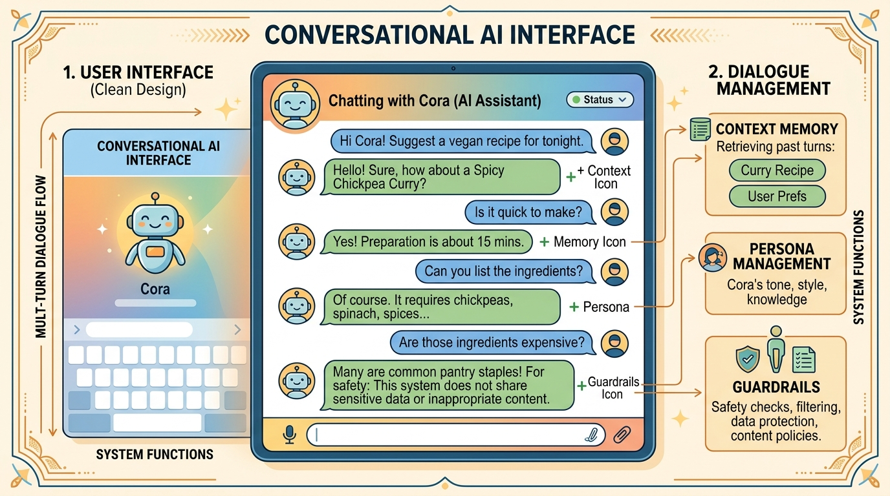

"The real problem is not whether machines think but whether men do."
Echo, Philosophically Inclined AI Agent

Chapter Overview
Conversational AI is arguably the most visible application of large language models. From customer support chatbots to AI companions, creative writing partners, and voice assistants, the ability to sustain coherent, context-aware, multi-turn dialogue is central to how people interact with language models in practice. Building great conversational systems requires far more than calling an API; it demands careful architectural decisions about dialogue state, memory, persona consistency, and graceful handling of conversation breakdowns. The synthetic data techniques from Chapter 13 can help generate training examples for these specialized behaviors.
This chapter covers the complete stack for building conversational AI. It begins with dialogue system architecture, contrasting task-oriented, open-domain, and hybrid approaches. It then explores persona design for companionship and creative writing applications, followed by memory and context management techniques that allow conversations to span sessions and retain important information over time. The chapter also addresses multi-turn dialogue patterns including clarification, correction, topic switching, and fallback strategies. Finally, it covers voice and multimodal interfaces that bring conversational AI beyond text.
By the end of this chapter, you will be able to design dialogue architectures for different use cases, implement persistent memory systems, build persona-consistent chatbots, manage complex multi-turn conversation flows, and integrate speech and vision capabilities into conversational applications, all while respecting safety and ethical guardrails.
Conversational AI brings together everything from prompt engineering to memory management to retrieval. This chapter teaches you to build multi-turn dialogue systems that maintain context, manage state, and deliver coherent user experiences, skills that connect directly to the agent architectures in Part VI.
Learning Objectives
- Compare task-oriented, open-domain, and hybrid dialogue system architectures and select the right approach for a given application
- Design system prompts that specify persona, tone, guardrails, and behavioral constraints for conversational agents
- Implement dialogue state tracking and slot-filling mechanisms for task-oriented conversations
- Build persona-consistent chatbots with defined personality, voice, and backstory
- Design and implement short-term and long-term memory systems using sliding windows, summarization, and vector stores
- Handle multi-turn dialogue challenges including clarification, correction, topic switching, and fallback strategies
- Manage context window overflow through priority-based eviction and dynamic context budgeting
- Integrate speech-to-text, text-to-speech, and vision capabilities into conversational pipelines
- Evaluate conversational AI systems using both automated metrics and human judgment
Prerequisites
- Chapter 10: LLM APIs (chat completions, message formatting, system prompts)
- Chapter 11: Prompt Engineering (few-shot prompting, chain-of-thought, structured outputs)
- Chapter 18: Retrieval-Augmented Generation (embedding search, vector stores)
- Familiarity with Python async programming and web frameworks (FastAPI or Flask)
- Basic understanding of REST APIs and WebSocket connections
Sections
- 21.1 Dialogue System Architecture Task-oriented vs. open-domain vs. hybrid dialogue systems. Dialogue state tracking and slot filling. Turn management and conversation flow. System prompts as behavioral specification. Building a complete dialogue pipeline.
- 21.2 Personas, Companionship & Creative Writing Persona design for conversational AI: personality, tone, brand voice, and backstory. Character.AI patterns and AI companionship applications. Co-writing and style transfer. Consistency challenges across long conversations. Ethical considerations.
- 21.3 Memory & Context Management Short-term memory with buffer and sliding window approaches. Long-term memory through summarization, vector stores, and entity extraction. MemGPT/Letta architecture for self-managed memory. Session persistence and user profile systems.
- 21.4 Multi-Turn Dialogue & Conversation Flows Clarification, correction, and topic-switching patterns. Guided conversation flows and fallback strategies. Human handoff mechanisms. Context window overflow management with priority-based eviction and dynamic context budgeting.
- 21.5 Voice & Multimodal Interfaces Speech-to-text with Whisper, Deepgram, and AssemblyAI. Text-to-speech with ElevenLabs, PlayHT, and Cartesia. Real-time voice AI pipelines using LiveKit, Vapi, and Pipecat. Integrating vision capabilities into conversational systems.
- 21.6 Voice Agents and Speech Interfaces From voice pipelines to voice agents. OpenAI Realtime API, LiveKit Agents, latency optimization, turn-taking and interruption, telephony integration.
- 21.7 Human-AI Interaction Patterns & Evaluation HCI methods for LLM interfaces, RealHumanEval productivity metrics, longitudinal trust calibration studies, over-reliance detection, participatory design, UX patterns for AI assistants, and anthropomorphism effects.
What's Next?
In the next part, Part VI: Agentic AI, we build autonomous agents that reason, plan, and act using tools and multi-agent orchestration.